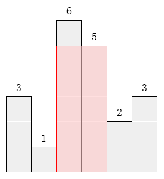

最大的矩形
题目
问题描述
在横轴上放了n个相邻的矩形，每个矩形的宽度是1，而第i（1 ≤ i ≤ n）个矩形的高度是hi。这n个矩形构成了一个直方图。例如，下图中六个矩形的高度就分别是3, 1, 6, 5, 2, 3。

请找出能放在给定直方图里面积最大的矩形，它的边要与坐标轴平行。对于上面给出的例子，最大矩形如下图所示的阴影部分，面积是10。

问题描述
第一行包含一个整数n，即矩形的数量(1 ≤ n ≤ 1000)。
第二行包含n 个整数h1, h2, … , hn，相邻的数之间由空格分隔。(1 ≤ hi ≤ 10000)。hi是第i个矩形的高度。
输出格式
输出一行，包含一个整数，即给定直方图内的最大矩形的面积。
样例输入
6
3 1 6 5 2 3
样例输出
10
分析
遍历，判断每一个矩形左右高度不小于它的相连的矩形的数量，构成的矩形的面积就等于数量乘以它的高度
代码
#include <stdio.h>
int arr[10000];
int main(int argc, char *argv[])
{
int n, i, j, result = 0;
scanf("%d", &n);
for (i = 0; i < n; i++) {
scanf("%d", &arr[i]);
}
for (i = 0; i < n; i++) {
int V = 0;
for (j = i; j >=0; j--) {
if (arr[j] >= arr[i]) {
V += arr[i];
} else {
break;
}
}
for (j = i+1; j < n; j++) {
if (arr[j] >= arr[i]) {
V += arr[i];
} else {
break;
}
}
if (V > result) {
result = V;
}
}
printf("%d\n", result);
return 0;
}